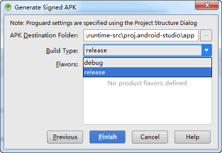

使用AndroidStudio编辑Cocos项目
接下来详细介绍一下如何使用Android Studio打开以及编辑cocos2d-x 3.10项目：
一,新建项目：
新建源代码项目，预编译库项目不支持使用Android Stduio打开，见图1：
图1：新建项目。
二,Android Studio下载与安装：
1）项目成功创建，如果未安装Android Studio，“Android Studio打开”图标禁用，点击“Android Studio打开”，弹出提示对话框，见图2：
图2：未安装Android Studio提示窗口。
2）点击“前往下载”，打开“ Android Studio官网（国内用户需要翻墙）”，下载Android Studio，见图3：
图3：下载Android Studio。
3）下载完成后，双击Andoid Studio安装包，打开 “Android Studio安装界面（见图4）”，点击“Next >”：
图4：Android Studio安装界面。
4）打开Android Studio组件自定义安装界面（见图5），全部勾选，点击“Next >”：
图5：Android Studio组件自定义安装界面。
5）打开Android Studio以及SDK安装目录选择界面（见图6），SDK目录记好后面会用到，点击“Next >”，开始进行安装：
图6：Android Studio以及SDK安装目录选择界面。
6）安装完成显示完成界面（见图7）：
图7：Android Studio安装完成界面。
三,Android Studio打开项目：
1）安装完成后，需要添加Android 5.1.1（API 22）SDK Platform 以及 Build-tools 22.0.1，打开SDK的安装目录，双击打开“SDK Manager.exe”，见图8：
图8：打开SDK Manager.exe。
2）选择 Android 5.1.1（API 22）SDK Platform 以及 Android SDK Build-tools 22.0.1，然后“Install packagers…（国内用户需要翻墙）“，见图9：
图9：安装 Android 5.1.1（API 22）SDK Platform 以及 Android SDK Build-tools 22.0.1。
3）重启 Cocos，“Android Studio打开”启用，见图10：
图10：“Android Studio打开”启用。
4）点击“Android Studio打开”，提示“Import Project from Gradle”，点击“OK”，开始下载并配置 Gradle（国内用户需要翻墙），见图11：
图11：Import Project from Gradle
5）“Import Project from Gradle”完毕之后，成功打开项目，见图12：
图12：成功打开项目
四,使用Android Studio调试Cocos项目
Android手机通过数据线与主机相连，点击菜单 Run -> Debug ‘项目名称’，弹出“Device Chooser”，见图13：
图13：Device Chooser。
Choose a running device: Debug项目在连接到主机的手机设备。
Launcher emulator: Debug项目在模拟器。
选择好调试的设备，点击 “OK”，可以开始调试了。
五,使用Android Studio生成APK：
1）调试好程序之后，点击菜单：“Build” -> “Generate Signed APK”，弹出设置签名对话框，见图14：
图14：Generate Signed APK窗口。
Create new…：创建新的 Key store。
Choose existing…：选择已经存在的 Key store。
2）设置完Key store之后，点击“Next”，打开“生成目录设置以及Build类型”窗口，见图15：

图15：生成目录设置以及Build类型
APK Destination Folder：APK生成目录。
Build Type：Build类型，分为debug或者release。
Flavors：Product flavors 主要用来定制APK的flavors，常用来进行多渠道的定义，方便多渠道打包。
3）点击“Finish”，开始生成APK，生成完毕，弹出生成结果窗口，见图16：
图16：Andoid APK生成完毕
扫描二维码或在微信中搜索 KeepMovingXin